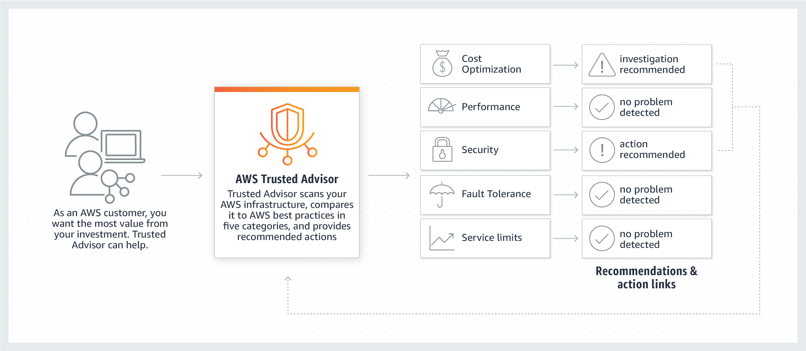

A multi-national company is looking at optimizing their AWS resources across various countries and regions. They want to understand the best practices on cost optimization, performance, and security for their system architecture spanning across multiple business units. Which AWS service is the best fit for their requirements?
Correct: B. Why it is right
Trusted Advisor account scan kore AWS best practice er shathe compare kore recommendation dey: cost optimization, performance, security, fault tolerance, service limits, operational excellence (PDF p. 860).
Question chay best practices on cost, performance, security → Trusted Advisor.
Why the other options are wrong
- A. Config resource configuration record ar compliance audit kore ("ager config ki chilo"); architecture best practice advice dey na.
- C. Management Console shudhu web UI diye service manage korar jayga; kono best practice feedback dey na.
- D. Systems Manager instance/resource operate ar automate kore (Run Command, Patch); best practice recommendation dey na.
Keyword: best practices on cost optimization, performance, security → Trusted Advisor
Original explanation (English)
Correct option: "AWS Trusted Advisor"
AWS Trusted Advisor is an online tool that draws upon best practices learned from AWS’s aggregated operational history of serving hundreds of thousands of AWS customers. Trusted Advisor inspects your AWS environment and makes recommendations for saving money, improving system performance, or closing security gaps. It scans your AWS infrastructure and compares it to AWS Best practices in five categories (Cost Optimization, Performance, Security, Fault Tolerance, Service limits) and then provides recommendations.
How Trusted Advisor Works

via - https://aws.amazon.com/premiumsupport/technology/trusted-advisor/Incorrect options: "AWS Config" - AWS Config is a service that enables you to assess, audit, and evaluate the configurations of your AWS resources. With Config, you can review changes in configurations and relationships between AWS resources, dive into detailed resource configuration histories, and determine your overall compliance against the configurations specified in your internal guidelines. You can use Config to answer questions such as - “What did my AWS resource look like at xyz point in time?”. It does not offer any feedback about architectural best practices.
"AWS Management Console" - The AWS Management Console is a web application that comprises and refers to a broad collection of service consoles for managing Amazon Web Services. You log into your AWS account using the AWS Management console. It does not offer any feedback about architectural best practices.
"AWS Systems Manager" - AWS Systems Manager is an AWS service that you can use to view and control your infrastructure on AWS. Using the Systems Manager console, you can view operational data from multiple AWS services and automate operational tasks across your AWS resources. With Systems Manager, you can group resources, like Amazon EC2 instances, Amazon S3 buckets, or Amazon RDS instances, by application, view operational data for monitoring and troubleshooting, and take action on your groups of resources. It does not offer any feedback about architectural best practices.
Reference: https://aws.amazon.com/premiumsupport/technology/trusted-advisor/
References: https://aws.amazon.com/premiumsupport/technology/trusted-advisor/
Related: Section 30 Other Services